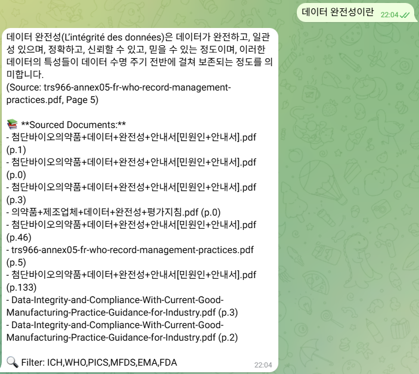
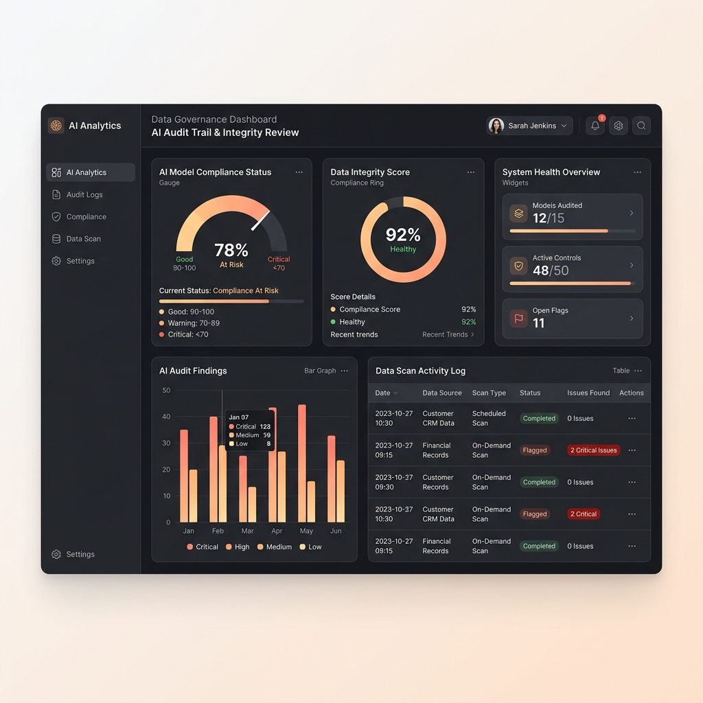
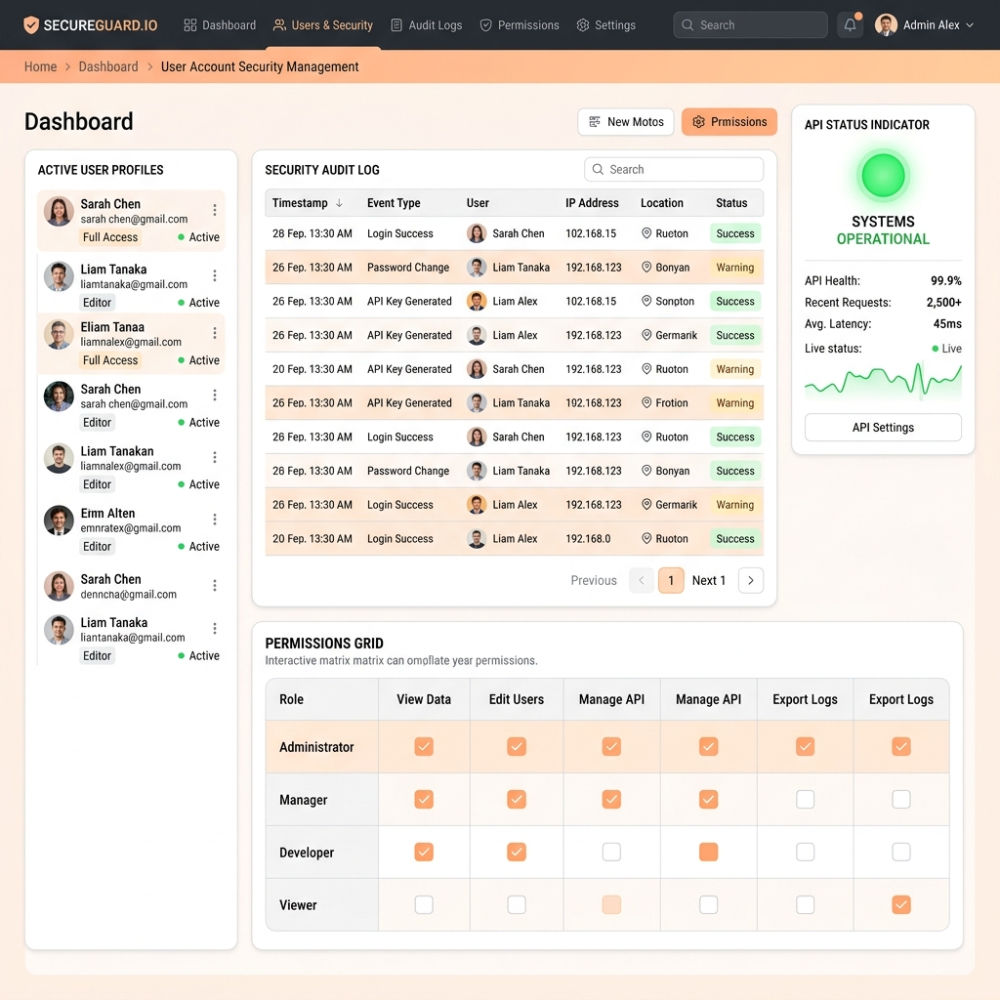

완료
스프레드시트 CSV 도입
수기 엑셀 템플릿의 밸리데이션 보증 및 Audit Trail 관리를 통한 데이터 무결성 확보
Data Integrity × Digital Transformation
Driving Process Digitalization and Quality Assetization, Hero.
제약·바이오 현장 실무 경험과 IT/DI 거버넌스 역량을 연결하여,
단순한 규제 대응을 넘어
신뢰할 수 있는 데이터 기반의 디지털 품질 체계를 설계합니다.
Connecting biopharma field experience with IT/DI governance expertise to design a reliable, data-driven digital quality system beyond simple compliance.
생명공학 학사 수강부터 시작하여 QC 실무를 거쳐 IT/DI 컴플라이언스 전문가로 성장하기까지의 여정입니다.
생명공학 전공
바이오의약품 핵심 이론 함양
병장 수송특과 만기전역
생명공학 학사 취득
야구동아리 활동 부회장 역임
품질관리(QC) 사원
HPLC, GC 정밀
기기분석 실무
SQLD, 리눅스마스터 취득
통계 및 GMP 전문 교육 수료
IT팀 선임
GxP 시스템 운영, EMA/FDA 글로벌 실사 대비
전사 DI 구축 및 CSV 수행
AX디스커버리 프로젝트 진행
Veeva 시스템 운영 및 개선
QC 실무에서 기여한 현장 지식과 글로벌 IT/DI 가이드라인에 대한 전문성을 결합한 3대 핵심 경쟁력입니다.
QC 현장 실무 지식을 녹여낸 디지털 전환 지원
글로벌 가이드라인 준수 및 실사 수검 대응
SCADA, LIMS, EDMS, QMS 운영 및 AI 품질 전환 연구
DI팀 선임
SCADA, LIMS, EDMS, QMS 시스템 운영 및 품질 시스템 AX(인공지능 전환) 프로젝트 수행
IT팀 선임
거버넌스 표준화 및 인프라 고도화
IT팀 선임
시스템 보안 고도화 및 운영 최적화
IT팀 선임
DI 감시 운영 체계 및 기초 인프라 확립
품질관리(QC) 사원
QC 고도화 및 데이터 무결성 강화
품질관리(QC) 사원
품질관리 기초 확립
기업지원단 사원
기업과 대학 내 실험실 협업 연결
수기 엑셀 템플릿의 밸리데이션 보증 및 Audit Trail 관리를 통한 데이터 무결성 확보

Mastersizer3000 등 신규 도입 정밀 기기 시험방법 밸리데이션 및 적격성 평가 성공적 수행

전사 시스템 공용 계정 전수 조사 및 접근 권한 원격 제어 재설정, 레거시 독립 장비 백업망 구축

Audit Trail Review 신규 모듈 도입 및 업무 프로세스 개선을 통한 전면 디지털화

신규 사이트 네트워크 아키텍처 수립 및 스마트 팩토리 기반 인프라 통합 조성

글로벌 실사 대비 SOP Gap 분석, DI 전사 교육 및 절차 개정을 통한 체계 고도화

텔레그램 기반 RAG 챗봇으로 글로벌 GMP 및 DI 가이드라인 실시간 탐색 및 출처 인용 답변 지원

Gemini 2.0과 Sliding Window 청킹 기법을 활용한 GxP 설비 감사 추적 자동 무결성 스캔 도구

Supabase 인증 및 감증 감사 로그 테이블을 활용한 cGMP 보안 컴플라이언스 대응 대시보드
SK바이오사이언스에서 품질 디지털 혁신을 리드해 나갈 단계별 성과 목표와 개발 계획입니다.
입사 후 즉시 전력으로서 GAMP 5 가이드라인에 기반한 신규 설비의 CSV(컴퓨터 시스템 밸리데이션) 검증과 글로벌 규제(FDA/EMA) 요건을 완벽히 정합하는 DI 표준화 작업을 선제적으로 지휘하겠습니다. 이전 직무에서 수행한 풍부한 CSV 마스터플랜 및 적격성 평가 성공 실무 경험을 활용하여 규제 실사 지적 위험을 사전에 방지하고 스마트 인프라의 안정 가동에 기여하겠습니다.
제조 현장 설비(SCADA/MES)와 품질 분석 시스템(LIMS/SDMS) 간의 데이터 흐름을 끊김 없이 통합하는 파이프라인을 기획하겠습니다. 수동 개입 및 종이 기반 오딧 리뷰 절차를 전면 배제하여 휴먼 에러 가능성을 원천 차단하고, 다국적 빅파마 및 규제 기관의 철저한 추적성 감사를 한 번에 통과할 수 있는 환경을 정착시키겠습니다.
CSV 검증을 통해 투명하게 축적된 품질 데이터를 자산화하여, 공정 최적화 및 이상을 선제적으로 감지할 수 있는 AI 분석 아키텍처를 적용하겠습니다. 기계와 사람이 각자의 강점을 발휘하는 지능화된 품질 관리 모델을 구현함으로써 의사결정 속도와 백신/의약품 신뢰도를 최대로 제고하겠습니다.
글로벌 사이트(송도 R&PD, 안동 L하우스, 독일 IDT Biologika)의 데이터를 효율적으로 이관하고 복구 성능(BCP)을 보증하기 위해 AWS/Azure 등 제약 맞춤형 규격의 GxP 클라우드 가이드라인을 심도 있게 학습하겠습니다.
이미 취득한 SQLD 역량을 고도화하여 대규모 데이터 레이크 쿼리를 마스터하고, 파이썬 기반 데이터 통제 분석법과 생성형 AI(Veeva AI 모듈 등)의 현업 타당성 검토를 능숙히 이행할 수 있는 기술 역량을 연마하겠습니다.
FDA 21 CFR Part 11 개정 방향, ISPE GAMP 5 2nd Edition 가이드라인을 선제적으로 리서치하여 글로벌 스탠다드 변화에 1초 만에 대처할 수 있는 독자적인 사내 DI 교육을 구성하고 지휘하는 리더가 되겠습니다.
생명공학 학사 졸업
병장 수송특과 만기전역
이과계열 졸업
2026.03
한국정보통신자격협회
2025.01
한국정보통신진흥협회
2024.04
한국데이터진흥원
2022.09
130점 / IM3
2020.06
800점
2020.05
대한상공회의소
Coursera 수료
통계 기초, 활용 및 파이썬 데이터 분석 과정 수료
GMP 규정 및 품질관리, 제약공정, 밸리데이션 전문과정 이수
바이오의약품 제조 및 GMP 품질관리 실무교육 이수
SK바이오사이언스의 성공적인 DX/AX 전환을 준비하는 파트너로서 기여하겠습니다.
연락은 아래 이메일로 부탁드립니다.